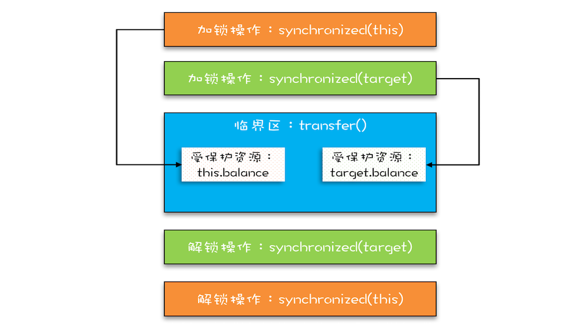
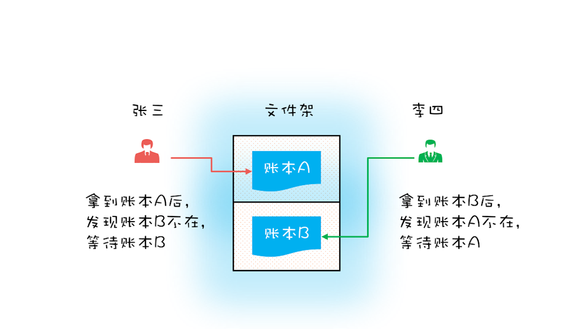
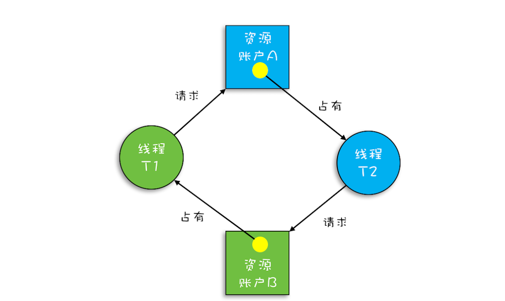
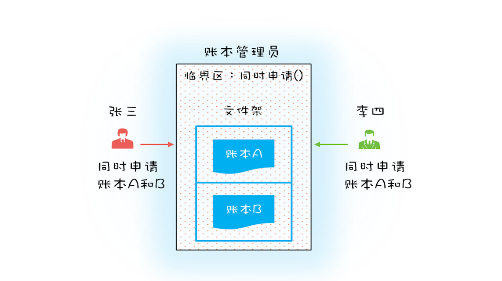

- 00 学习攻略 如何才能学好并发编程？.md.html
- 00 开篇词 你为什么需要学习并发编程？.md.html
- 01 可见性、原子性和有序性问题：并发编程Bug的源头.md.html
- 02 Java内存模型：看Java如何解决可见性和有序性问题.md.html
- 03 互斥锁（上）：解决原子性问题.md.html
- 04 互斥锁（下）：如何用一把锁保护多个资源？.md.html
- 05 一不小心就死锁了，怎么办？.md.html
- 06 用“等待-通知”机制优化循环等待.md.html
- 07 安全性、活跃性以及性能问题.md.html
- 08 管程：并发编程的万能钥匙.md.html
- 09 Java线程（上）：Java线程的生命周期.md.html
- 10 Java线程（中）：创建多少线程才是合适的？.md.html
- 11 Java线程（下）：为什么局部变量是线程安全的？.md.html
- 12 如何用面向对象思想写好并发程序？.md.html
- 13 理论基础模块热点问题答疑.md.html
- 14 Lock和Condition（上）：隐藏在并发包中的管程.md.html
- 15 Lock和Condition（下）：Dubbo如何用管程实现异步转同步？.md.html
- 16 Semaphore：如何快速实现一个限流器？.md.html
- 17 ReadWriteLock：如何快速实现一个完备的缓存？.md.html
- 18 StampedLock：有没有比读写锁更快的锁？.md.html
- 19 CountDownLatch和CyclicBarrier：如何让多线程步调一致？.md.html
- 20 并发容器：都有哪些“坑”需要我们填？.md.html
- 21 原子类：无锁工具类的典范.md.html
- 22 Executor与线程池：如何创建正确的线程池？.md.html
- 23 Future：如何用多线程实现最优的“烧水泡茶”程序？.md.html
- 24 CompletableFuture：异步编程没那么难.md.html
- 25 CompletionService：如何批量执行异步任务？.md.html
- 26 Fork_Join：单机版的MapReduce.md.html
- 27 并发工具类模块热点问题答疑.md.html
- 28 Immutability模式：如何利用不变性解决并发问题？.md.html
- 29 Copy-on-Write模式：不是延时策略的COW.md.html
- 3 个用户来信 打开一个新的并发世界.md.html
- 30 线程本地存储模式：没有共享，就没有伤害.md.html
- 31 Guarded Suspension模式：等待唤醒机制的规范实现.md.html
- 32 Balking模式：再谈线程安全的单例模式.md.html
- 33 Thread-Per-Message模式：最简单实用的分工方法.md.html
- 34 Worker Thread模式：如何避免重复创建线程？.md.html
- 35 两阶段终止模式：如何优雅地终止线程？.md.html
- 36 生产者-消费者模式：用流水线思想提高效率.md.html
- 37 设计模式模块热点问题答疑.md.html
- 38 案例分析（一）：高性能限流器Guava RateLimiter.md.html
- 39 案例分析（二）：高性能网络应用框架Netty.md.html
- 40 案例分析（三）：高性能队列Disruptor.md.html
- 41 案例分析（四）：高性能数据库连接池HiKariCP.md.html
- 42 Actor模型：面向对象原生的并发模型.md.html
- 43 软件事务内存：借鉴数据库的并发经验.md.html
- 44 协程：更轻量级的线程.md.html
- 45 CSP模型：Golang的主力队员.md.html
- 用户来信 真好，面试考到这些并发编程，我都答对了！.md.html
- 结束语 十年之后，初心依旧.md.html
- 捐赠
05 一不小心就死锁了，怎么办？
在上一篇文章中，我们用Account.class作为互斥锁，来解决银行业务里面的转账问题，虽然这个方案不存在并发问题，但是所有账户的转账操作都是串行的，例如账户A 转账户B、账户C 转账户D这两个转账操作现实世界里是可以并行的，但是在这个方案里却被串行化了，这样的话，性能太差。
试想互联网支付盛行的当下，8亿网民每人每天一笔交易，每天就是8亿笔交易；每笔交易都对应着一次转账操作，8亿笔交易就是8亿次转账操作，也就是说平均到每秒就是近1万次转账操作，若所有的转账操作都串行，性能完全不能接受。
那下面我们就尝试着把性能提升一下。
向现实世界要答案
现实世界里，账户转账操作是支持并发的，而且绝对是真正的并行，银行所有的窗口都可以做转账操作。只要我们能仿照现实世界做转账操作，串行的问题就解决了。
我们试想在古代，没有信息化，账户的存在形式真的就是一个账本，而且每个账户都有一个账本，这些账本都统一存放在文件架上。银行柜员在给我们做转账时，要去文件架上把转出账本和转入账本都拿到手，然后做转账。这个柜员在拿账本的时候可能遇到以下三种情况：
- 文件架上恰好有转出账本和转入账本，那就同时拿走；
- 如果文件架上只有转出账本和转入账本之一，那这个柜员就先把文件架上有的账本拿到手，同时等着其他柜员把另外一个账本送回来；
- 转出账本和转入账本都没有，那这个柜员就等着两个账本都被送回来。
上面这个过程在编程的世界里怎么实现呢？其实用两把锁就实现了，转出账本一把，转入账本另一把。在transfer()方法内部，我们首先尝试锁定转出账户this（先把转出账本拿到手），然后尝试锁定转入账户target（再把转入账本拿到手），只有当两者都成功时，才执行转账操作。这个逻辑可以图形化为下图这个样子。

两个转账操作并行示意图
而至于详细的代码实现，如下所示。经过这样的优化后，账户A 转账户B和账户C 转账户D这两个转账操作就可以并行了。
class Account {
private int balance;
// 转账
void transfer(Account target, int amt){
// 锁定转出账户
synchronized(this) {
// 锁定转入账户
synchronized(target) {
if (this.balance > amt) {
this.balance -= amt;
target.balance += amt;
}
}
}
}
}
没有免费的午餐
上面的实现看上去很完美，并且也算是将锁用得出神入化了。相对于用Account.class作为互斥锁，锁定的范围太大，而我们锁定两个账户范围就小多了，这样的锁，上一章我们介绍过，叫细粒度锁。使用细粒度锁可以提高并行度，是性能优化的一个重要手段。
这个时候可能你已经开始警觉了，使用细粒度锁这么简单，有这样的好事，是不是也要付出点什么代价啊？编写并发程序就需要这样时时刻刻保持谨慎。
的确，使用细粒度锁是有代价的，这个代价就是可能会导致死锁。
在详细介绍死锁之前，我们先看看现实世界里的一种特殊场景。如果有客户找柜员张三做个转账业务：账户A 转账户B 100元，此时另一个客户找柜员李四也做个转账业务：账户B 转账户A 100 元，于是张三和李四同时都去文件架上拿账本，这时候有可能凑巧张三拿到了账本A，李四拿到了账本B。张三拿到账本A后就等着账本B（账本B已经被李四拿走），而李四拿到账本B后就等着账本A（账本A已经被张三拿走），他们要等多久呢？他们会永远等待下去…因为张三不会把账本A送回去，李四也不会把账本B送回去。我们姑且称为死等吧。

转账业务中的“死等”
现实世界里的死等，就是编程领域的死锁了。死锁的一个比较专业的定义是：一组互相竞争资源的线程因互相等待，导致“永久”阻塞的现象。
上面转账的代码是怎么发生死锁的呢？我们假设线程T1执行账户A转账户B的操作，账户A.transfer(账户B)；同时线程T2执行账户B转账户A的操作，账户B.transfer(账户A)。当T1和T2同时执行完①处的代码时，T1获得了账户A的锁（对于T1，this是账户A），而T2获得了账户B的锁（对于T2，this是账户B）。之后T1和T2在执行②处的代码时，T1试图获取账户B的锁时，发现账户B已经被锁定（被T2锁定），所以T1开始等待；T2则试图获取账户A的锁时，发现账户A已经被锁定（被T1锁定），所以T2也开始等待。于是T1和T2会无期限地等待下去，也就是我们所说的死锁了。
class Account {
private int balance;
// 转账
void transfer(Account target, int amt){
// 锁定转出账户
synchronized(this){ ①
// 锁定转入账户
synchronized(target){ ②
if (this.balance > amt) {
this.balance -= amt;
target.balance += amt;
}
}
}
}
}
关于这种现象，我们还可以借助资源分配图来可视化锁的占用情况（资源分配图是个有向图，它可以描述资源和线程的状态）。其中，资源用方形节点表示，线程用圆形节点表示；资源中的点指向线程的边表示线程已经获得该资源，线程指向资源的边则表示线程请求资源，但尚未得到。转账发生死锁时的资源分配图就如下图所示，一个“各据山头死等”的尴尬局面。

转账发生死锁时的资源分配图
如何预防死锁
并发程序一旦死锁，一般没有特别好的方法，很多时候我们只能重启应用。因此，解决死锁问题最好的办法还是规避死锁。
那如何避免死锁呢？要避免死锁就需要分析死锁发生的条件，有个叫Coffman的牛人早就总结过了，只有以下这四个条件都发生时才会出现死锁：
- 互斥，共享资源X和Y只能被一个线程占用；
- 占有且等待，线程T1已经取得共享资源X，在等待共享资源Y的时候，不释放共享资源X；
- 不可抢占，其他线程不能强行抢占线程T1占有的资源；
- 循环等待，线程T1等待线程T2占有的资源，线程T2等待线程T1占有的资源，就是循环等待。
反过来分析，也就是说只要我们破坏其中一个，就可以成功避免死锁的发生。
其中，互斥这个条件我们没有办法破坏，因为我们用锁为的就是互斥。不过其他三个条件都是有办法破坏掉的，到底如何做呢？
- 对于“占用且等待”这个条件，我们可以一次性申请所有的资源，这样就不存在等待了。
- 对于“不可抢占”这个条件，占用部分资源的线程进一步申请其他资源时，如果申请不到，可以主动释放它占有的资源，这样不可抢占这个条件就破坏掉了。
- 对于“循环等待”这个条件，可以靠按序申请资源来预防。所谓按序申请，是指资源是有线性顺序的，申请的时候可以先申请资源序号小的，再申请资源序号大的，这样线性化后自然就不存在循环了。
我们已经从理论上解决了如何预防死锁，那具体如何体现在代码上呢？下面我们就来尝试用代码实践一下这些理论。
1. 破坏占用且等待条件
从理论上讲，要破坏这个条件，可以一次性申请所有资源。在现实世界里，就拿前面我们提到的转账操作来讲，它需要的资源有两个，一个是转出账户，另一个是转入账户，当这两个账户同时被申请时，我们该怎么解决这个问题呢？
可以增加一个账本管理员，然后只允许账本管理员从文件架上拿账本，也就是说柜员不能直接在文件架上拿账本，必须通过账本管理员才能拿到想要的账本。例如，张三同时申请账本A和B，账本管理员如果发现文件架上只有账本A，这个时候账本管理员是不会把账本A拿下来给张三的，只有账本A和B都在的时候才会给张三。这样就保证了“一次性申请所有资源”。

通过账本管理员拿账本
对应到编程领域，“同时申请”这个操作是一个临界区，我们也需要一个角色（Java里面的类）来管理这个临界区，我们就把这个角色定为Allocator。它有两个重要功能，分别是：同时申请资源apply()和同时释放资源free()。账户Account 类里面持有一个Allocator的单例（必须是单例，只能由一个人来分配资源）。当账户Account在执行转账操作的时候，首先向Allocator同时申请转出账户和转入账户这两个资源，成功后再锁定这两个资源；当转账操作执行完，释放锁之后，我们需通知Allocator同时释放转出账户和转入账户这两个资源。具体的代码实现如下。
class Allocator {
private List<Object> als =
new ArrayList<>();
// 一次性申请所有资源
synchronized boolean apply(
Object from, Object to){
if(als.contains(from) ||
als.contains(to)){
return false;
} else {
als.add(from);
als.add(to);
}
return true;
}
// 归还资源
synchronized void free(
Object from, Object to){
als.remove(from);
als.remove(to);
}
}
class Account {
// actr应该为单例
private Allocator actr;
private int balance;
// 转账
void transfer(Account target, int amt){
// 一次性申请转出账户和转入账户，直到成功
while(!actr.apply(this, target))
；
try{
// 锁定转出账户
synchronized(this){
// 锁定转入账户
synchronized(target){
if (this.balance > amt){
this.balance -= amt;
target.balance += amt;
}
}
}
} finally {
actr.free(this, target)
}
}
}
2. 破坏不可抢占条件
破坏不可抢占条件看上去很简单，核心是要能够主动释放它占有的资源，这一点synchronized是做不到的。原因是synchronized申请资源的时候，如果申请不到，线程直接进入阻塞状态了，而线程进入阻塞状态，啥都干不了，也释放不了线程已经占有的资源。
你可能会质疑，“Java作为排行榜第一的语言，这都解决不了？”你的怀疑很有道理，Java在语言层次确实没有解决这个问题，不过在SDK层面还是解决了的，java.util.concurrent这个包下面提供的Lock是可以轻松解决这个问题的。关于这个话题，咱们后面会详细讲。
3. 破坏循环等待条件
破坏这个条件，需要对资源进行排序，然后按序申请资源。这个实现非常简单，我们假设每个账户都有不同的属性 id，这个 id 可以作为排序字段，申请的时候，我们可以按照从小到大的顺序来申请。比如下面代码中，①~⑥处的代码对转出账户（this）和转入账户（target）排序，然后按照序号从小到大的顺序锁定账户。这样就不存在“循环”等待了。
class Account {
private int id;
private int balance;
// 转账
void transfer(Account target, int amt){
Account left = this ①
Account right = target; ②
if (this.id > target.id) { ③
left = target; ④
right = this; ⑤
} ⑥
// 锁定序号小的账户
synchronized(left){
// 锁定序号大的账户
synchronized(right){
if (this.balance > amt){
this.balance -= amt;
target.balance += amt;
}
}
}
}
}
总结
当我们在编程世界里遇到问题时，应不局限于当下，可以换个思路，向现实世界要答案，利用现实世界的模型来构思解决方案，这样往往能够让我们的方案更容易理解，也更能够看清楚问题的本质。
但是现实世界的模型有些细节往往会被我们忽视。因为在现实世界里，人太智能了，以致有些细节实在是显得太不重要了。在转账的模型中，我们为什么会忽视死锁问题呢？原因主要是在现实世界，我们会交流，并且会很智能地交流。而编程世界里，两个线程是不会智能地交流的。所以在利用现实模型建模的时候，我们还要仔细对比现实世界和编程世界里的各角色之间的差异。
我们今天这一篇文章主要讲了用细粒度锁来锁定多个资源时，要注意死锁的问题。这个就需要你能把它强化为一个思维定势，遇到这种场景，马上想到可能存在死锁问题。当你知道风险之后，才有机会谈如何预防和避免，因此，识别出风险很重要。
预防死锁主要是破坏三个条件中的一个，有了这个思路后，实现就简单了。但仍需注意的是，有时候预防死锁成本也是很高的。例如上面转账那个例子，我们破坏占用且等待条件的成本就比破坏循环等待条件的成本高，破坏占用且等待条件，我们也是锁了所有的账户，而且还是用了死循环 while(!actr.apply(this, target));方法，不过好在apply()这个方法基本不耗时。 在转账这个例子中，破坏循环等待条件就是成本最低的一个方案。
所以我们在选择具体方案的时候，还需要评估一下操作成本，从中选择一个成本最低的方案。
课后思考
我们上面提到：破坏占用且等待条件，我们也是锁了所有的账户，而且还是用了死循环 while(!actr.apply(this, target));这个方法，那它比synchronized(Account.class)有没有性能优势呢？
欢迎在留言区与我分享你的想法，也欢迎你在留言区记录你的思考过程。感谢阅读，如果你觉得这篇文章对你有帮助的话，也欢迎把它分享给更多的朋友。
© 2019 - 2023 Liangliang Lee. Powered by gin and hexo-theme-book.